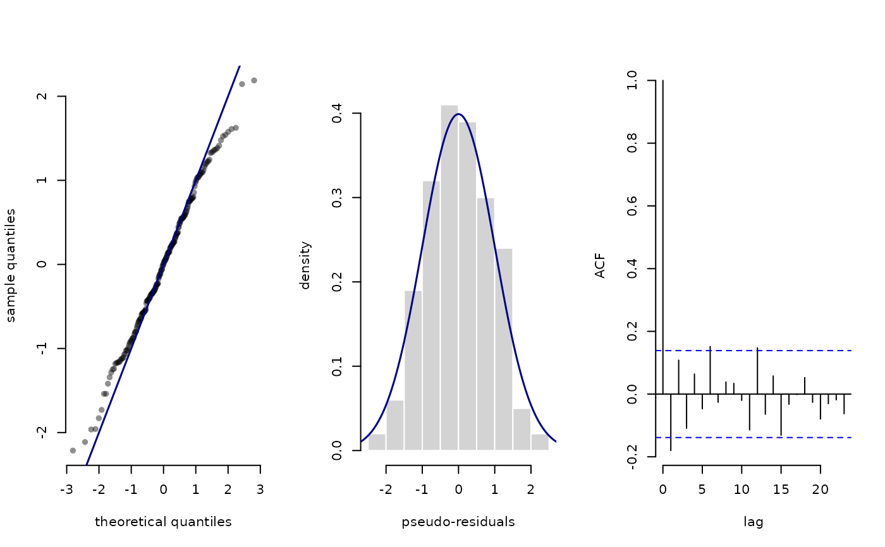

Calculate pseudo-residuals
pseudo_res.RdFor HMMs, pseudo-residuals are used to assess the goodness-of-fit of the model. These are based on the cumulative distribution function (CDF) $$F_{X_t}(x_t) = F(x_t \mid x_1, \dots, x_{t-1}, x_{t+1}, \dots, x_T)$$ and can be used to quantify whether an observation is extreme relative to its model-implied distribution.
This function calculates such residuals via probability integral transform, based on the local state probabilities obtained by stateprobs or stateprobs_g and the respective parametric family.
Usage
pseudo_res(
obs,
dist,
par,
stateprobs = NULL,
mod = NULL,
normal = TRUE,
discrete = NULL,
randomise = TRUE,
seed = NULL
)Arguments
- obs
vector of continuous-valued observations (of length n)
- dist
character string specifying which parametric CDF to use (e.g.,
"norm"for normal or"pois"for Poisson) or CDF function to evaluate directly. If a discrete CDF is passed, thediscreteargument needs to be set toTRUEbecause this cannot determined automatically.- par
named parameter list for the parametric CDF
Names need to correspond to the parameter names in the specified distribution (e.g.
list(mean = c(1,2), sd = c(1,1))for a normal distribution and 2 states). This argument is as flexible as the parametric distribution allows. For example you can have a matrix of parameters with one row for each observation and one column for each state.- stateprobs
matrix of local state probabilities for each observation (of dimension c(n,N), where N is the number of states) as computed by
stateprobs,stateprobs_gorstateprobs_p- mod
optional model object containing initial distribution
delta, transition probability matrixGamma, matrix of state-dependent probabilitiesallprobs, and potentially atrackIDvariableIf you are using automatic differentiation either with
RTMB::MakeADFunorqremland includeforward,forward_gorforward_pin your likelihood function, the objects needed for state decoding are automatically reported after model fitting. Hence, you can pass the model object obtained from runningRTMB::report()or fromqremldirectly to this function and avoid calculating local state proabilities manually. In this case, a call should look likepseudo_res(obs, "norm", par, mod = mod).- normal
logical, if
TRUE, returns Gaussian pseudo residualsThese will be approximately standard normally distributed if the model is correct.
- discrete
logical, if
TRUE, computes discrete pseudo residuals (which slightly differ in their definition)By default, will be determined using
distargument, but only works for standard discrete distributions. When used with a special discrete distribution, set toTRUEmanually. Seepseudo_res_discretefor details.- randomise
for discrete pseudo residuals only. Logical, if
TRUE, return randomised pseudo residuals. Recommended for discrete observations.- seed
for discrete pseudo residuals only. Integer, seed for random number generation
Details
When used for discrete pseudo-residuals, this function is just a wrapper for pseudo_res_discrete.
Examples
## continuous-valued observations
obs = rnorm(100)
stateprobs = matrix(0.5, nrow = 100, ncol = 2)
par = list(mean = c(1,2), sd = c(1,1))
pres = pseudo_res(obs, "norm", par, stateprobs)
## discrete-valued observations
obs = rpois(100, lambda = 1)
par = list(lambda = c(1,2))
pres = pseudo_res(obs, "pois", par, stateprobs)
#> Calculating discrete pseudo-residuals
#> Randomised between lower and upper
## custom CDF function
obs = rnbinom(100, size = 1, prob = 0.5)
par = list(size = c(0.5, 2), prob = c(0.4, 0.6))
pres = pseudo_res(obs, pnbinom, par, stateprobs,
discrete = TRUE)
#> Calculating discrete pseudo-residuals
#> Randomised between lower and upper
# if discrete CDF function is passed, 'discrete' needs to be set to TRUE
## full example with model object
step = trex$step[1:200]
nll = function(par){
getAll(par)
Gamma = tpm(logitGamma)
delta = stationary(Gamma)
mu = exp(logMu); REPORT(mu)
sigma = exp(logSigma); REPORT(sigma)
allprobs = matrix(1, length(step), 2)
ind = which(!is.na(step))
for(j in 1:2) allprobs[ind,j] = dgamma2(step[ind], mu[j], sigma[j])
-forward(delta, Gamma, allprobs)
}
par = list(logitGamma = c(-2,-2),
logMu = log(c(0.3, 2.5)),
logSigma = log(c(0.3, 0.5)))
obj = MakeADFun(nll, par)
opt = nlminb(obj$par, obj$fn, obj$gr)
#> outer mgc: 336.5166
#> outer mgc: 20.97319
#> outer mgc: 34.15246
#> outer mgc: 19.14836
#> outer mgc: 22.89668
#> outer mgc: 14.22144
#> outer mgc: 16.43229
#> outer mgc: 8.153913
#> outer mgc: 6.812466
#> outer mgc: 9.6369
#> outer mgc: 12.03652
#> outer mgc: 3.217212
#> outer mgc: 3.933861
#> outer mgc: 3.111364
#> outer mgc: 2.511187
#> outer mgc: 3.259669
#> outer mgc: 1.203184
#> outer mgc: 0.9612578
#> outer mgc: 1.247134
#> outer mgc: 1.783606
#> outer mgc: 1.46798
#> outer mgc: 0.7872239
#> outer mgc: 0.06505949
#> outer mgc: 0.1913509
#> outer mgc: 0.06904775
#> outer mgc: 0.1037367
#> outer mgc: 0.01007877
#> outer mgc: 0.002057907
#> outer mgc: 0.0002424967
mod = obj$report()
pres = pseudo_res(step, "gamma2", list(mean = mod$mu, sd = mod$sigma),
mod = mod)
qqnorm(pres)
abline(a = 0, b = 1)
